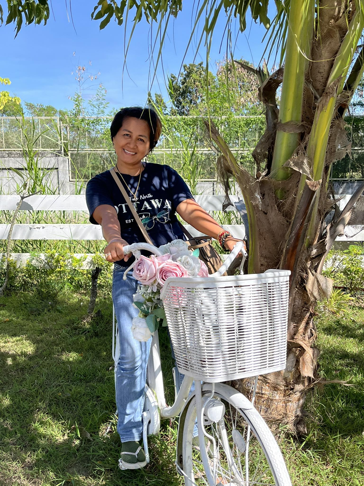

Hello! I'm Jody SV, a professional event stylist and caterer dedicated to creating memorable experiences. I specialize in transforming any space into a beautiful setting tailored to your vision. With years of experience in styling, event coordination, and catering, I bring creativity, elegance, and attention to detail to every project.
Whether it's an intimate gathering or a grand celebration, I work closely with clients to ensure every detail is perfect. My goal is to turn your moments into unforgettable memories.